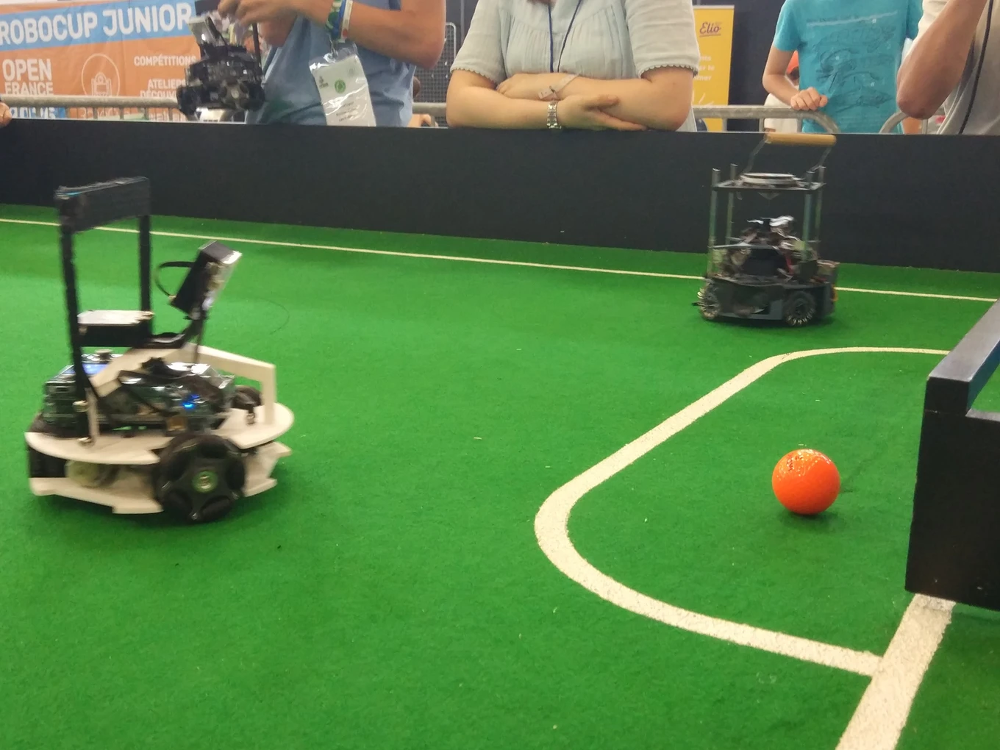
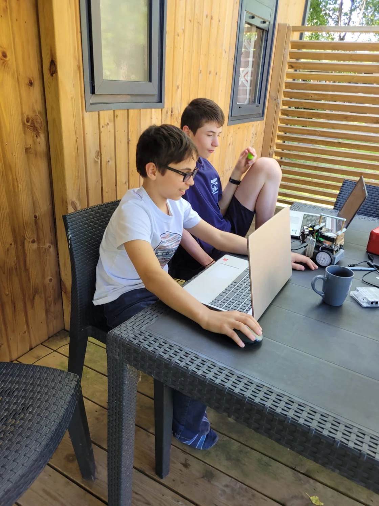
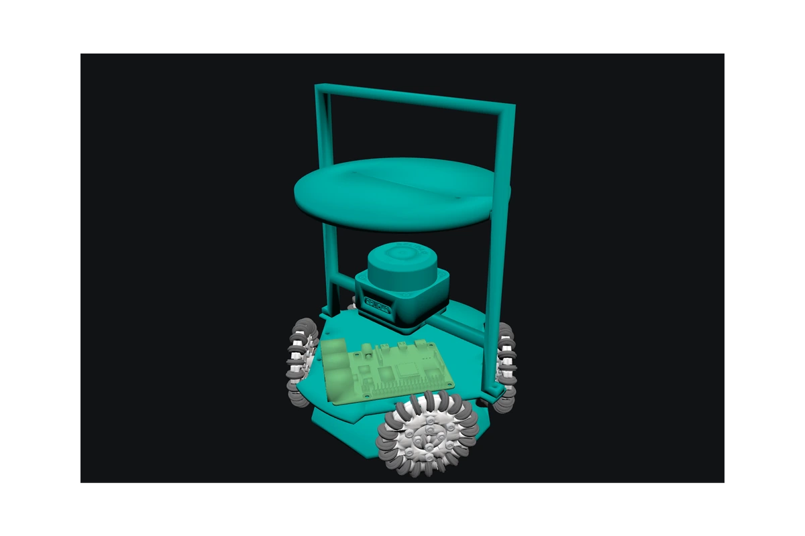
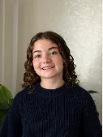
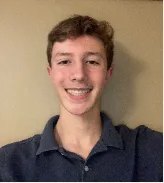
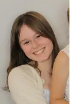
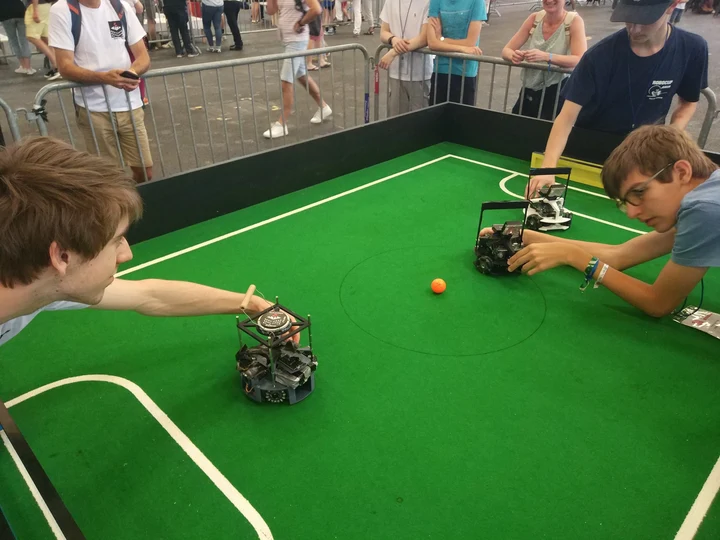
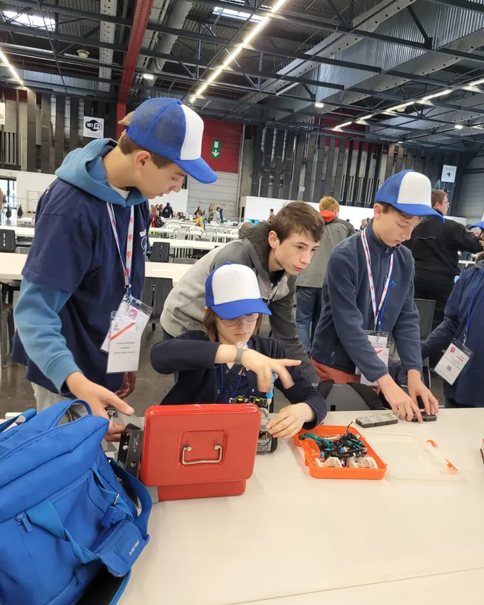
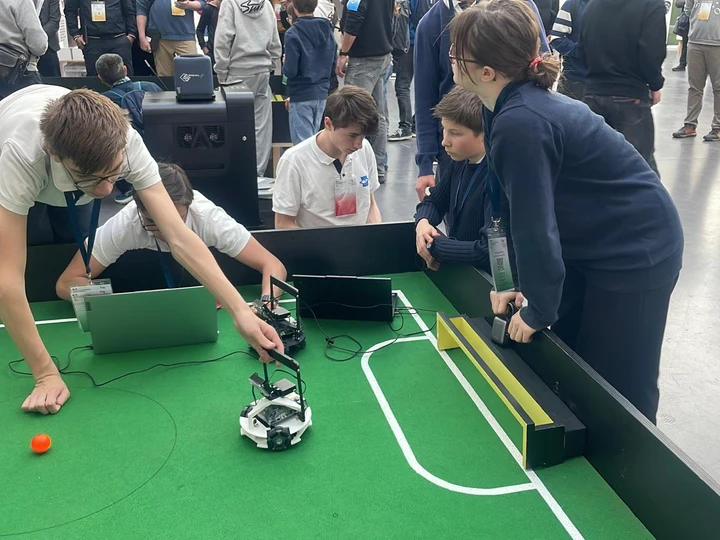

Saison 2026 · Ligue Soccer
RoboCupJunior Soccer en Île-de-France
Six jeunes et leur mentor du lycée Notre-Dame de Boulogne conçoivent, impriment et programment leurs robots de football. Vice-champions de France 2026, ils préparent le titre national.
- Podiums
- 3, régionaux et nationaux
- Équipe
- 6 jeunes et 1 mentor
- Fabrication
- 100 % en interne

4 pôles d'ingénierie pour le robot.
Chaque pôle travaille une partie du même robot, de la caméra à la tactique de match.
- Vision et IA embarquée
La caméra repère le ballon ; le code choisit le prochain geste.
- Mécanique et CAO
Les pièces sont dessinées en CAO, puis imprimées en 3D.
- Électronique et PCB
Les cartes, le LiDAR et l'alimentation sont câblés et testés.
- Tactique 2 vs 2 et radio
Deux robots se parlent et se partagent le terrain.

Trois podiums en trois saisons de compétition.
Les résultats de l'équipe depuis 2024, et l'objectif fixé pour 2027.
- Championnat de France2026
Vice-champions de France.
- Championnat d'Île-de-France2024 · 2026
Vice-champions régionaux deux fois.
- Open national2024
4e, avec le Prix de l'Enthousiasme.
- Open d'Île-de-France2025
4e de l'Open régional.
- Objectif2027
Titre national et qualification internationale.

6 pièces sous le capot du robot.
Six pièces font le robot : la caméra, la base, le LiDAR, les capteurs de ligne, le calculateur et la batterie.
- Caméra fisheye
Elle repère le ballon, les buts et les lignes blanches.
- Base holonome
Quatre roues omni pour se déplacer dans toutes les directions.
- LiDAR 360°
Le RPLidar C1 mesure ce qui entoure le robot sur le terrain.
- Capteurs de ligne
Ils vérifient la position du robot près des bords.
- Raspberry Pi 4
Le calculateur embarqué exécute la vision et la tactique.
- Batterie LiPo
Elle alimente le robot pendant un match.

L'équipe du lycée Notre-Dame de Boulogne.
Six élèves et leur mentor, du lycée Notre-Dame de Boulogne, en Île-de-France : du dessin des pièces au match.
 Augustin
AugustinÉlève

AurianeÉlève
- Charles
Élève

GaspardÉlève
 Henri
HenriÉlève

JustineÉlève
 Stéphane
StéphaneMentor

Galerie photo de l'équipe et des matchs.
Quatre images, du trophée de 2024 à la table de match de 2026.



La saison
Une saison ne se joue pas seulement sur le terrain. Elle se joue à l'atelier, dans les tests de la caméra, les impressions ratées et les matchs d'entraînement, jusqu'à ce que deux robots jouent comme un seul.